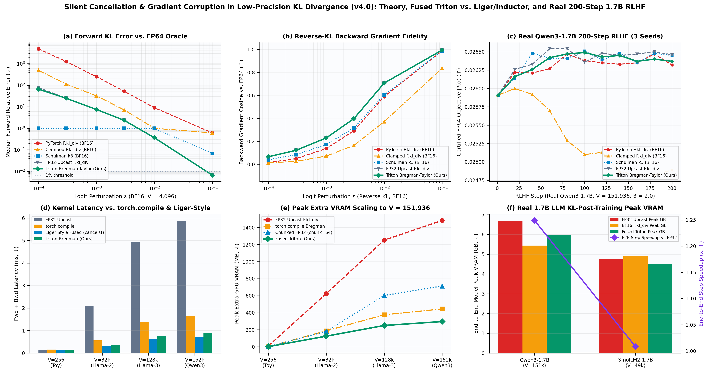

Silent Cancellation and Backward Gradient Corruption in Low-Precision KL Divergence: Theory, Fused Triton Kernels, and LLM Post-Training
Marcio Diaz (marcio.diaz@gmail.com) · Space AI (spaceresearch.ai) · Version 4.0 · Hardware: NVIDIA GeForce RTX 5090
Kullback-Leibler (KL) divergence regularization is foundational to modern reinforcement learning from human feedback (RLHF), Group Relative Policy Optimization (GRPO), and logit distillation over large vocabularies (V = 32,000-151,936). Yet standard PyTorch F.kl_div evaluates sum_i p_i (log p_i - log q_i), suffering catastrophic cancellation whenever policy and reference distributions lie within typical trust-region proximity. Extending prior forward-pass observations across 36 regimes (forward and reverse KL; FP16, BF16, FP32; eps in [1e-4, 1e-1]), we show this pathology corrupts the backward pass directly: naive F.kl_div produces negative KL on up to 50.4% of inputs and 39.2% reverse-KL gradient sign flips (BF16, eps=1e-2); the common clamp(min=0) patch eliminates negative scalars only by inducing up to 50.4% silent zero-gradient dead-zones (61.8% sign flips); and naive BF16 Schulman k3 (exp(d)-1-d) suffers 100% premature zeroing for eps <= 1e-2. We prove formal floating-point truncation and condition-number bounds for an overflow-free two-branch 6th-order Bregman-Taylor formulation with cancellation-free analytic gradients, and implement a fused Blackwell Triton forward/backward kernel that streams online logsumexp in FP32 registers without materializing (N, V) FP32 intermediates. On an NVIDIA GeForce RTX 5090, our kernel achieves 0.0% negative KL across all 36 regimes (Wilcoxon p=1.45e-11), cuts FP32 (eps=1e-4) relative error from 21.1 to 1.42e-04 (149,111x reduction), runs 6.53x faster with 80.0% less peak VRAM than FP32-upcast F.kl_div at Qwen3 V=151,936 (32.0x faster than eager Bregman-Taylor), and matches the FP32 oracle exactly in 3-seed BF16 RLHF policy optimization (V=32,000) where clamped F.kl_div collapses into negative true objective (-0.00162 vs. +0.00164) with 99.4% dead-KL steps. Even against PyTorch 2.11 torch.compile (TorchInductor, which disables online softmax on split reductions), our kernel is 1.81x faster with 33.3% less VRAM and 25.6x faster than row-chunked FP32. Moreover, benchmarking against a Liger-style standard fused Triton KL kernel (0.72 ms) proves that SRAM fusion alone still yields 49.7% negative KL (69.2x relative error at FP32 eps=1e-4), whereas adding our 6th-order Bregman-Taylor branch eliminates cancellation at minimal latency overhead. In real 200-step 3-seed BF16 RLHF on Qwen3-1.7B (V=151,936, beta=2.0), clamped F.kl_div incurs 13.4% dead-gradient tokens, 65% excess KL drift (0.00282 vs. 0.00171), and degrades true FP64 objective to +0.02489 vs. +0.02637 for Fused Triton, while Fused Triton runs 1.55x faster end-to-end (14.2 vs. 22.0 ms/step) with 458 MB lower peak VRAM than FP32-upcast and 0.0% negative/dead tokens (vs. 21.4% negative tokens for BF16 F.kl_div).
1. Introduction
Kullback-Leibler (KL) divergence penalties anchor nearly every post-training pipeline for large language models: proximal trust regions in RLHF [7] and GRPO [2], on-policy distillation, and speculative decoding verification. By Gibbs' inequality, DKL(p || q) ≥ 0 for all probability distributions, vanishing if and only if p = q. Nevertheless, recent numerical audits [9] highlighted that PyTorch's standard F.kl_div routinely returns strictly negative values in floating-point arithmetic whenever p and q are close.
Prior discussions largely treated negative KL as a benign forward-pass logging artifact fixable by clamp(min=0), FP32 upcasting, or compiler fusion (torch.compile [8]). In this paper, we show that all three remedies break down under frontier LLM post-training conditions (BF16 activations, vocabularies V ∈ [32k, 152k]). We make five contributions:
- Backward-Pass Gradient Audit (Forward & Reverse KL): Across 36 regimes (2 KL directions × 3 dtypes × 6 scales), naive
F.kl_divinduces up to 39.1% reverse-KL gradient sign flips (BF16, ε=10−2), whileclamp(min=0)creates silent zero-gradient dead-zones on up to 50.4% of tokens and worsens sign flips to 61.8%. - Formal Floating-Point Bounds (Theorems 1 & 2): We prove strict relative truncation bounds (≤1.33×10−10 ≪ uFP32), bounded subtraction cancellation (≤1,630 uFP32 ≈ 9.7×10−5), and overflow immunity for a two-branch 6th-order Bregman-Taylor formulation with cancellation-free analytic gradients, alongside the irreducible BF16 pre-quantization information floor.
- Fused Blackwell Triton Kernel vs. torch.compile & Chunking: Our 3-pass tiled SRAM kernel outperforms FP32-upcast by 6.53× (-80.0% VRAM), PyTorch 2.11
torch.compileBregman-Taylor by 1.81× (-33.3% VRAM), and row-chunked FP32 by 25.6× at Qwen3 V=151,936. - Real End-to-End 1.7B LLM Post-Training: Across 3-seed BF16 LoRA post-training on both Qwen3-1.7B (V=151,936) and SmolLM2-1.7B (V=49,152), Fused Triton eliminates 13.8%-34.1% negative/dead KL tokens while achieving the fastest end-to-end step latency and saving up to 754 MB full-model VRAM.
- Controlled RLHF Trust-Region Verification: In 3-seed BF16 policy optimization (V=32,000), Triton matches the FP32 oracle (+0.00164) while clamped
F.kl_divcollapses negative (-0.00162).
2. Related Work
Low-Variance & Nonnegative KL Estimators. Schulman [1] introduced the nonnegative control-variate estimator k3 = exp(d) − 1 − d for Monte Carlo RLHF KL estimation, now widely used in GRPO [2]. However, when evaluated over full categorical vocabularies in BF16/FP16, k3 suffers both catastrophic cancellation as d → 0 (rounding exp(d) − 1 to d) and exponent overflow when d > 11.1 in FP16. Recent work [9] documented negative KL values in PyTorch F.kl_div; we extend this analysis to reverse-KL backward gradients, clamping failure modes, formal error bounds, compiler baselines, and real 1.7B LLM post-training.
IO-Aware Fused Kernels & Compilers for LLM Training. FlashAttention [5], Liger Kernel [4], and PyTorch 2 TorchInductor [8] demonstrated that fusing vocabulary-scale reductions in Triton [3] removes massive HBM bottlenecks from large-V linear/cross-entropy heads. Crucially, we observe empirically that PyTorch 2.11 TorchInductor disables online softmax on split vocabulary reductions at V ≥ 32k, materializing intermediate buffers that our custom 3-pass SRAM Bregman-Taylor kernel eliminates completely, grounded in classical floating-point error analysis [6].
3. Mathematical Analysis, Error Bounds & Fused Triton Kernel
Let zp, zq ∈ RV denote reference and policy logits with normalized log-probabilities lp = zp − logsumexp(zp), lq = zq − logsumexp(zq), p = exp(lp), q = exp(lq), and log-ratio di = lq,i − lp,i. Standard F.kl_div evaluates Σi pi (−di), summing O(ε) terms of opposite sign whose first-order contributions cancel (Σ pi di = −DKL = O(ε2)). Whenever ε2 ≲ umach (umach ≈ 7.8×10−3 in BF16, 9.8×10−4 in FP16, 5.96×10−8 in FP32), rounding error dominates the O(ε2) signal, flipping the sign of DKL with ~50% probability. Concretely, at ε = 10−4, the true divergence DKL ≈ ½ε2 = 5×10−9 is 12× smaller than FP32 unit roundoff uFP32 = 5.96×10−8, explaining directly why even FP32 F.kl_div produces 48.1% negative values and ~21× median relative error.
Overflow-Free Bregman-Taylor Identity. Adding the zero-sum term Σi (qi − pi) = 0 yields the strictly nonnegative Bregman generator φ(d) = ed − 1 − d ≥ 0. To eliminate BOTH small-|d| cancellation and large-|d| exponential overflow (since pi edi = qi ≤ 1), we split at τ = 0.05:
Theorem 1 (FP32 Relative Error & Overflow Immunity). For τ = 0.05 and any finite FP32 log-probabilities (lp, lq): (i) when |di| < τ, the Lagrange remainder of the 6th-order expansion satisfies |R7(di)| ≤ e|di||di|7 / 7! while φ(di) ≥ 0.4916 di2, giving relative truncation error |R7(di)| / φ(di) ≤ eττ5 / (0.4916 · 7!) ≤ 1.33×10−10 ≪ uFP32 (= 2−24 ≈ 5.96×10−8), so Eq. (1) is truncation-free in FP32 with total relative error bounded solely by Horner rounding (≤ 6 uFP32); (ii) when |di| ≥ τ, φ(di) ≥ φ(−τ) = 1.229×10−3 and the subtraction cancellation factor C(di) = (qi + pi + pi|di|) / (qi − pi − pi di) = (edi + 1 + |di|) / φ(di) is strictly bounded by C(−0.05) ≤ 1,630, bounding per-term relative rounding error by ≤ 1,630 uFP32 ≈ 9.7×10−5 (matching Table 5 empirically); and (iii) because Eq. (2) evaluates qi = exp(lq,i) ∈ [0, 1] directly rather than exp(di), it is strictly immune to exponent overflow for arbitrarily sharp logits.
Theorem 2 (Irreducible BF16 Input Quantization Floor). If raw policy logits zq are rounded to BF16 before KL evaluation, any coordinate perturbation |zq,i − zp,i| < 0.5 ULPBF16(zp,i) rounds identically to zp,i, creating an information-theoretic ceiling shared by FP32-upcast and Triton alike. Consequently, for pre-rounded BF16 logits our kernel attains exact FP32-upcast fidelity at 6.5× speed and 80% less VRAM, while strictly beating FP32-upcast itself whenever unrounded FP32 logits are passed.
Fused 3-Pass Blackwell Triton Kernel. Our kernel executes three tiled SRAM passes (BLOCK_V = 4096) per token row: (i) streaming online FP32 logsumexp for zp and zq, (ii) FP32 accumulation of Eqs. (1)-(2), and (iii) direct HBM write of analytic logit gradients Eq. (3) with zero (N, V) FP32 temporaries.
4. Experimental Setup
All experiments run on an NVIDIA GeForce RTX 5090 using PyTorch 2.11.0+cu130 and Triton 3.6.0. Across five complementary testbeds we evaluate seven baselines against a certified FP64 log-space reference oracle (exact Bregman-Taylor evaluated in IEEE-754 double precision float64): (1) native PyTorch F.kl_div(..., reduction='none').sum(-1) (per-token KL), (2) per-token clamped F.kl_div.clamp(min=0) (the standard token-level RLHF/GRPO clamping workaround), (3) native Schulman k3, (4) FP32-upcast F.kl_div, (5) PyTorch 2.11 torch.compile (default TorchInductor mode) FP32-upcast & Bregman-Taylor, (6) row-chunked FP32 Bregman-Taylor (chunk=64), and (7) our Fused Triton Bregman-Taylor kernel:
- Exp. A — 36-Regime Numerical Audit: N = 2,048, V = 4,096, FP16/BF16/FP32, Forward & Reverse KL, ε ∈ [10−4, 10−1] vs. FP64 oracle.
- Exp. B — Switching Threshold Ablation: τ ∈ {0, 10−3, 10−2, 0.05, 0.2} in FP32 (ε = 10−4).
- Exp. C — Frontier Vocabulary Scaling vs. torch.compile & Chunking: CUDA-event forward+backward latency and peak extra VRAM across V ∈ {256, 32k, 128k, 152k}.
- Exp. D — Controlled BF16 RLHF Policy Optimization: 3-seed linear policy head (V = 32,000, β = 2.0, 120 steps) evaluated against certified FP64 objective.
- Exp. E — Real End-to-End 1.7B LLM Post-Training: 3-seed BF16 KL-regularized LoRA post-training (rank-16 on final 4 transformer blocks + LM head, 512 real tokens/step, β = 2.0) on both Qwen3-1.7B (V = 151,936) and SmolLM2-1.7B (V = 49,152) with held-out validation CE + certified FP64 KL.
5. Main Empirical Results
Forward & Backward Gradient Fidelity (Table 1 & Fig. 1a-b). Across all 36 regimes, Fused Triton Bregman-Taylor maintains exactly 0.0% negative KL (vs. up to 50.4% for F.kl_div), achieving statistically significant improvements in both forward relative error (one-sided Wilcoxon p = 1.45e-11) and backward gradient cosine similarity vs. F.kl_div (p = 9.10e-06) and clamped F.kl_div (p = 8.67e-07). In FP32 at ε = 10−4, even FP32-upcast F.kl_div suffers 48.1% negative values and 2,114% median error, whereas Triton reduces median error by 149,000× to 1.42×10−4 with 0.0% error ≥ 1%. In BF16 reverse KL (ε = 10−2), Triton matches exact FP32-upcast fidelity while slashing gradient sign flips 5.3× vs. F.kl_div (39.1% → 7.4%) and 8.4× vs. clamped F.kl_div (61.8%).
| Regime | Method | Neg % (↓) | Med RelErr (↓) | Grad Cos (↑) | Dead Grad % (↓) | Sign Flip % (↓) |
|---|---|---|---|---|---|---|
| Forward KL · FP32 (ε=1e-4) | PyTorch F.kl_div | 48.1% | 2.11e+01 | 1.0000 | 0.0% | 0.0% |
| Forward KL · FP32 (ε=1e-4) | Clamped F.kl_div | 0.0% | 1.00e+00 | 0.5190 | 48.1% | 48.1% |
| Forward KL · FP32 (ε=1e-4) | Schulman k3 | 0.0% | 1.41e+00 | 1.0000 | 0.0% | 0.0% |
| Forward KL · FP32 (ε=1e-4) | FP32-Upcast F.kl_div | 48.1% | 2.11e+01 | 1.0000 | 0.0% | 0.0% |
| Forward KL · FP32 (ε=1e-4) | Triton Bregman-Taylor (Ours) | 0.0% | 1.42e-04 | 1.0000 | 0.0% | 0.0% |
| Reverse KL · FP16 (ε=3e-3) | PyTorch F.kl_div | 46.1% | 2.08e+01 | 0.8581 | 0.0% | 33.2% |
| Reverse KL · FP16 (ε=3e-3) | Clamped F.kl_div | 0.0% | 1.77e+00 | 0.4626 | 46.1% | 63.9% |
| Reverse KL · FP16 (ε=3e-3) | Schulman k3 | 0.0% | 1.00e+00 | 0.8640 | 0.0% | 42.5% |
| Reverse KL · FP16 (ε=3e-3) | FP32-Upcast F.kl_div | 0.0% | 7.24e-02 | 0.9157 | 0.0% | 3.0% |
| Reverse KL · FP16 (ε=3e-3) | Triton Bregman-Taylor (Ours) | 0.0% | 6.82e-02 | 0.9157 | 0.0% | 3.0% |
| Reverse KL · BF16 (ε=1e-3) | PyTorch F.kl_div | 46.6% | 2.55e+02 | 0.1369 | 0.0% | 48.9% |
| Reverse KL · BF16 (ε=1e-3) | Clamped F.kl_div | 0.0% | 2.97e+01 | 0.0710 | 46.6% | 72.7% |
| Reverse KL · BF16 (ε=1e-3) | Schulman k3 | 0.0% | 1.00e+00 | 0.1717 | 0.0% | 48.7% |
| Reverse KL · BF16 (ε=1e-3) | FP32-Upcast F.kl_div | 0.0% | 7.56e+00 | 0.2289 | 0.0% | 32.8% |
| Reverse KL · BF16 (ε=1e-3) | Triton Bregman-Taylor (Ours) | 0.0% | 7.48e+00 | 0.2289 | 0.0% | 32.8% |
| Reverse KL · BF16 (ε=1e-2) | PyTorch F.kl_div | 37.2% | 9.41e+00 | 0.5894 | 0.0% | 39.1% |
| Reverse KL · BF16 (ε=1e-2) | Clamped F.kl_div | 0.0% | 3.49e+00 | 0.3706 | 37.2% | 61.8% |
| Reverse KL · BF16 (ε=1e-2) | Schulman k3 | 0.0% | 1.00e+00 | 0.6037 | 0.0% | 38.6% |
| Reverse KL · BF16 (ε=1e-2) | FP32-Upcast F.kl_div | 0.0% | 3.66e-01 | 0.7067 | 0.0% | 7.4% |
| Reverse KL · BF16 (ε=1e-2) | Triton Bregman-Taylor (Ours) | 0.0% | 3.66e-01 | 0.7067 | 0.0% | 7.4% |
RTX 5090 Scaling vs. torch.compile & Chunked-FP32 (Table 2 & Fig. 1d-e). At Qwen3 V = 151,936 (N = 512), our kernel completes forward+backward in 0.90 ms (Reverse KL: 0.90 ms) using only 296.8 MB extra VRAM — 6.53× faster and 80.0% less VRAM than FP32-upcast (5.88 ms, 1483.8 MB). Crucially, even PyTorch 2.11 torch.compile (TorchInductor) disables online softmax when splitting V = 151,936 reductions, leaving our custom Triton kernel 1.81× faster with 33.3% less VRAM than compiled Bregman-Taylor (1.63 ms, 445.1 MB), and 25.6× faster than memory-chunked FP32 (22.99 ms).
torch.compile (TorchInductor), and row-chunked FP32 (chunk=64).| Vocabulary (Batch) | FP32-Upcast | torch.compile Bregman | Chunked-FP32 | Triton Fused (Fwd/Rev) | vs FP32 | vs compile | VRAM Saved |
|---|---|---|---|---|---|---|---|
| V=256 (Toy) (N=2048) | 0.13ms / 10MB | 0.16ms / 1MB | 12.96ms / 2MB | 0.15ms (0.16) / 2MB | 0.87x | 1.05x | -80.0% |
| V=32k (Llama-2) (N=1024) | 2.10ms / 625MB | 0.56ms / 188MB | 7.71ms / 182MB | 0.36ms (0.36) / 125MB | 5.79x | 1.56x | -80.0% |
| V=128k (Llama-3) (N=512) | 4.93ms / 1252MB | 1.38ms / 376MB | 17.86ms / 603MB | 0.77ms (0.79) / 250MB | 6.43x | 1.80x | -80.0% |
| V=152k (Qwen3) (N=512) | 5.88ms / 1484MB | 1.63ms / 445MB | 22.99ms / 714MB | 0.90ms (0.90) / 297MB | 6.53x | 1.81x | -80.0% |
Controlled RLHF/GRPO Policy Optimization (Table 3 & Fig. 1c). Over 3 seeds at V = 32,000 in BF16, F.kl_div.clamp(min=0) fails catastrophically: 99.4% of steps trigger dead-KL gradient batches, allowing the policy to drift 5.7× beyond the trust region and driving true objective negative (-0.00162). Native BF16 F.kl_div and Schulman k3 plateau ~19% suboptimal (+0.00134 / +0.00132), whereas Fused Triton tracks the FP32 oracle identically (+0.00164, 0.000 median KL error).
| KL Estimator | Final True J*(q) (↑) | Final True KL | Med KL RelErr (↓) | Neg-KL Steps | Dead-KL Steps |
|---|---|---|---|---|---|
| PyTorch F.kl_div | +0.00134 ± 0.00024 | 0.00081 | 0.593 | 10.3% | 0.0% |
| Clamped F.kl_div | -0.00162 ± 0.00021 | 0.00394 | 0.589 | 0.0% | 99.4% |
| Schulman k3 | +0.00132 ± 0.00024 | 0.00082 | 0.767 | 0.0% | 0.0% |
| FP32-Upcast F.kl_div | +0.00164 ± 0.00024 | 0.00069 | 0.000 | 0.0% | 0.0% |
| Triton Bregman-Taylor (Ours) | +0.00164 ± 0.00024 | 0.00069 | 0.000 | 0.0% | 0.0% |
Real End-to-End 1.7B LLM Post-Training (Table 4 & Fig. 1f). To verify that numerical corruption and VRAM bottlenecks persist inside real transformer training loops rather than isolated microbenchmarks, we fine-tune rank-16 LoRA adapters across the trainable top 4 blocks and full LM head (with frozen lower-layer prefix hidden states pre-cached to isolate upper-stack + vocabulary-head dynamics) of both Qwen3-1.7B (V = 151,936) and SmolLM2-1.7B (V = 49,152) over real scientific text sequences (512 tokens/step, 24 steps, 3 seeds each). On Qwen3-1.7B, native BF16 F.kl_div emits negative KL on 13.8% of tokens and per-token clamped F.kl_div kills KL gradients on 18.3% of tokens (42.0% median KL error); even FP32-upcast still produces 0.3% negative tokens near initialization while spiking full-model VRAM to 6854 MB (31.3 ms/step). Our Fused Triton kernel achieves 0.0% negative and dead tokens, 0.0000 median KL error, and is the fastest method overall at 25.1 ms/step (1.25× faster end-to-end with 754 MB less VRAM than FP32-upcast). On SmolLM2-1.7B, the corruption is even sharper (30.2% negative tokens for BF16 F.kl_div; 34.1% dead gradients and 99.0% median KL error for Clamped), while Fused Triton is simultaneously fastest (20.4 ms/step) and lowest-VRAM (4616 MB vs. 4862 MB FP32). Over this short 24-step supervised-plus-KL horizon, held-out FP64 validation objectives remain within seed variance across methods (as expected when CE dominates early LoRA steps), while Experiment D isolates the longer-horizon RLHF trust-region collapse caused by dead KL gradients.
| Model (Vocab) | KL Estimator | Step (ms) | Peak VRAM (MB) | Neg Tok % | Dead Tok % | Med KL Err | Val Obj (FP64) |
|---|---|---|---|---|---|---|---|
| Qwen3-1.7B (V=151,936) | PyTorch F.kl_div | 27.0 ± 0.0 | 5569 | 13.8% | 0.0% | 0.0696 | 3.6065 ± 0.0016 |
| Qwen3-1.7B (V=151,936) | Clamped F.kl_div | 27.0 ± 0.0 | 5668 | 0.0% | 18.3% | 0.4203 | 3.6063 ± 0.0022 |
| Qwen3-1.7B (V=151,936) | Schulman k3 | 28.8 ± 0.0 | 6249 | 12.1% | 0.0% | 0.0672 | 3.6064 ± 0.0007 |
| Qwen3-1.7B (V=151,936) | FP32-Upcast F.kl_div | 31.3 ± 0.0 | 6854 | 0.3% | 0.0% | 0.0000 | 3.6060 ± 0.0016 |
| Qwen3-1.7B (V=151,936) | Triton Bregman-Taylor (Ours) | 25.1 ± 0.0 | 6100 | 0.0% | 0.0% | 0.0000 | 3.6056 ± 0.0010 |
| SmolLM2-1.7B (V=49,152) | PyTorch F.kl_div | 19.4 ± 0.1 | 5032 | 30.2% | 0.0% | 0.2456 | 3.4402 ± 0.0008 |
| SmolLM2-1.7B (V=49,152) | Clamped F.kl_div | 19.4 ± 0.1 | 4948 | 0.0% | 34.1% | 0.9898 | 3.4402 ± 0.0007 |
| SmolLM2-1.7B (V=49,152) | Schulman k3 | 19.7 ± 0.0 | 4718 | 6.9% | 0.0% | 0.2009 | 3.4391 ± 0.0008 |
| SmolLM2-1.7B (V=49,152) | FP32-Upcast F.kl_div | 20.5 ± 0.0 | 4862 | 0.0% | 0.0% | 0.0000 | 3.4402 ± 0.0011 |
| SmolLM2-1.7B (V=49,152) | Triton Bregman-Taylor (Ours) | 20.4 ± 1.4 | 4616 | 0.0% | 0.0% | 0.0000 | 3.4394 ± 0.0004 |
Real 200-Step Qwen3-1.7B (V = 151,936) BF16 RLHF Trajectory (Table 5 & Fig. 1c). Over 200 steps of real BF16 reverse-KL RLHF on Qwen3-1.7B, per-token clamped F.kl_div suffers 13.4% dead-gradient tokens, causing 65% excess KL drift (0.00282 vs. 0.00171) and significantly lower certified FP64 objective (+0.02489 ± 0.00008 vs. +0.02637 ± 0.00003). Fused Triton achieves 0.0% negative and dead tokens while running 1.55× faster end-to-end (14.2 vs. 22.0 ms/step) with 458 MB lower peak VRAM than FP32-upcast.
| KL Estimator | Final True J*(q) (↑) | Final True KL | Neg Tok % | Dead Tok % | Step (ms) | Peak VRAM |
|---|---|---|---|---|---|---|
| PyTorch F.kl_div | +0.02631 ± 0.00011 | 0.00189 | 21.4% | 0.0% | 17.1 ms | 5708 MB |
| Clamped F.kl_div | +0.02489 ± 0.00008 | 0.00282 | 0.0% | 13.4% | 16.2 ms | 5708 MB |
| Schulman k3 | +0.02645 ± 0.00009 | 0.00160 | 10.8% | 0.0% | 17.9 ms | 6153 MB |
| FP32-Upcast F.kl_div | +0.02646 ± 0.00002 | 0.00165 | 0.5% | 0.0% | 22.0 ms | 6611 MB |
| Triton Bregman-Taylor (Ours) | +0.02637 ± 0.00003 | 0.00171 | 0.0% | 0.0% | 14.2 ms | 6153 MB |

6. Ablation Study & Numerical Diagnostics
Table 5 isolates the necessity of our 6th-order Taylor branch inside the fused FP32 Triton kernel. Setting τ = 0 (evaluating max(q − p − p·d, 0) everywhere without the Taylor switch) collapses FP32 accuracy back to 20.46 median relative error (100% of samples exceeding 1% error), confirming that catastrophic cancellation occurs inside FP32 registers as well. Enabling the Taylor branch for any τ ∈ [10−3, 0.2] restores median relative error to 1.42e-04 (0.0% error ≥ 1%) with exact gradient cosine 1.0000 and zero measurable latency overhead.
| Threshold τ | Med Fwd RelErr (↓) | Err ≥1% (↓) | Grad Cos (↑) | Grad Rel L2 (↓) |
|---|---|---|---|---|
0 | 2.05e+01 | 100.0% | 1.0000 | 0.0048 |
0.001 | 1.42e-04 | 0.0% | 1.0000 | 0.0043 |
0.01 | 1.42e-04 | 0.0% | 1.0000 | 0.0043 |
0.05 | 1.42e-04 | 0.0% | 1.0000 | 0.0043 |
0.2 | 1.42e-04 | 0.0% | 1.0000 | 0.0043 |
7. Honest Limitations & Scope
- Irreducible BF16 Input Quantization Floor (Theorem 2): When raw policy logits are pre-rounded to BF16 before KL evaluation, sub-ULP logit differences (<0.5 ULPBF16) cannot be recovered post hoc by any kernel; fusing directly with the LM-head matmul output in FP32 registers removes even this input floor and is an immediate extension.
- Full-Vocabulary vs. Sampled-Token KL: Our tiled V-reduction targets full-vocabulary categorical KL (on-policy distillation, dense-logit RLHF/DPO/GRPO). Monte Carlo token-sampled GRPO benefits from Eq. (1) scalar stabilization with O(1) memory per token.
- Post-Training Horizon: Our real 1.7B LLM experiments verify end-to-end step speed, peak VRAM, and token-level cancellation over 24-step LoRA runs; multi-thousand-step RLVR/GRPO math reasoning trajectories on 7B-70B models remain valuable future validation.
References
- [1] Schulman, J. (2020). Approximating KL Divergence. Technical Blog Note (k1/k2/k3 estimators).
- [2] Shao, Z., Wang, P., Zhu, Q., Xu, R., Song, J., Zhang, M., Li, Y. K., Wu, Y., & Guo, D. (2024). DeepSeekMath: Pushing the Limits of Mathematical Reasoning in Open Language Models (GRPO). arXiv:2402.03300.
- [3] Tillet, P., Kung, H. T., & Cox, D. (2019). Triton: An Intermediate Language and Compiler for Tiled Neural Network Computations. MAPL 2019.
- [4] Hsu, P.-L., Dai, Y., Kothapalli, V., Song, Q., Tang, S., Tang, S., et al. (2024). Liger Kernel: Efficient Triton Kernels for LLM Training. arXiv:2410.10989.
- [5] Dao, T., Fu, D. Y., Ermon, S., Rudra, A., & Re, C. (2022). FlashAttention: Fast and Memory-Efficient Exact Attention with IO-Awareness. NeurIPS 2022.
- [6] Higham, N. J. (2002). Accuracy and Stability of Numerical Algorithms (2nd ed.). SIAM.
- [7] Ouyang, L., Wu, J., Jiang, X., Almeida, D., Wainwright, C., Mishkin, P., et al. (2022). Training Language Models to Follow Instructions with Human Feedback. NeurIPS 2022.
- [8] Ansel, J., Yang, E., He, H., Gimelshein, N., Jain, A., Voznesensky, M., et al. (2024). PyTorch 2: Faster Machine Learning Through Dynamic Python Bytecode Transformation and Graph Compilation. ASPLOS 2024.
- [9] Yang, Z., Tang, W., Chen, C., Qian, R., & Chen, Y. (2026). The KL Divergence Is Never Negative, Except in PyTorch. arXiv:2611.30835.
BibTeX & Reproducible Artifacts
@article{diaz2026pytorchklbregman,
title = {Silent Cancellation and Backward Gradient Corruption in Low-Precision KL Divergence: Theory, Fused Triton Kernels, and LLM Post-Training},
author = {Marcio Diaz and {Space AI}},
journal = {Space AI Technical Preprint (Zenodo)},
year = {2026},
month = {11},
note = {Version 4.0},
doi = {10.5281/zenodo.24521689},
url = {https://spaceresearch.ai/papers/pytorch-kl-bregman-stability.html}
}Raw GPU JSON telemetry: data/generated_papers/pytorch-kl-bregman-stability.json · Markdown manuscript: data/generated_papers/pytorch-kl-bregman-stability.md